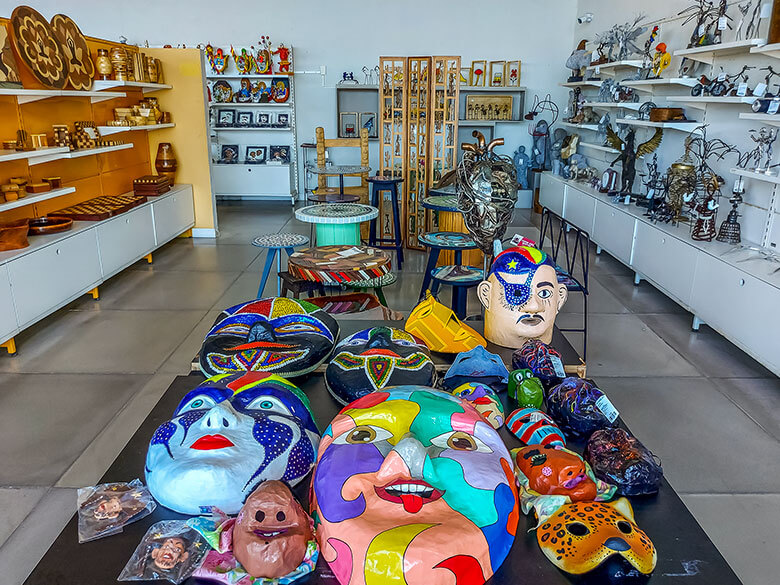
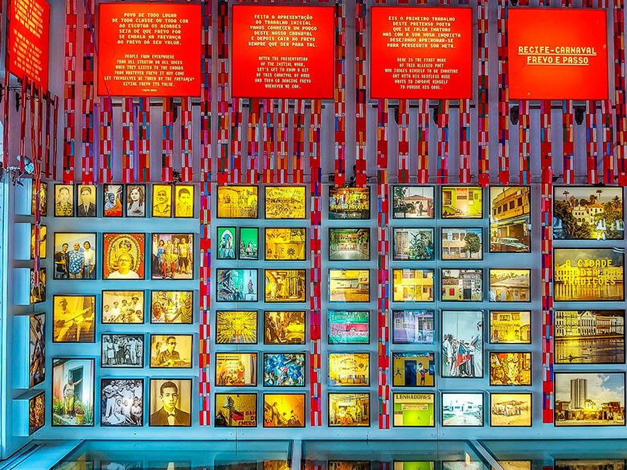
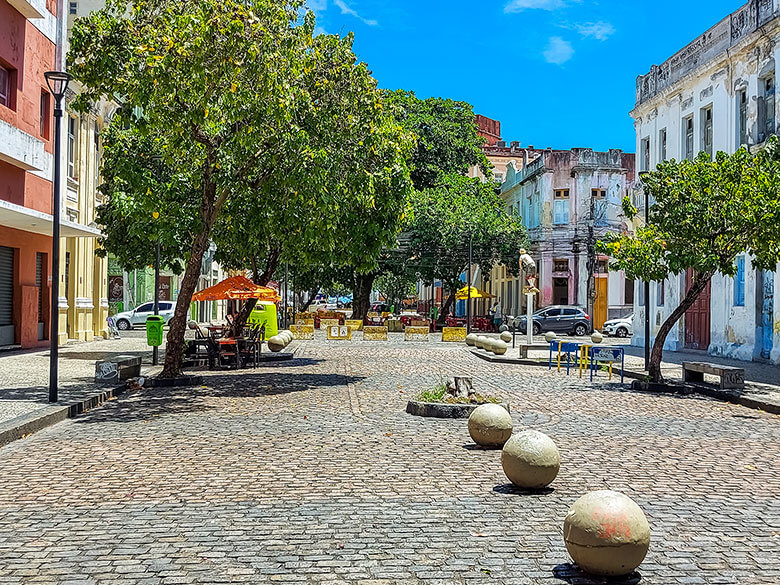

Pontos turisticos do Recife Antigo

página inicial
Paço do Frevo
O Paço do Frevo é um espaço cultural dedicado à difusão, pesquisa, lazer e formação nas áreas da dança e música do frevo localizado na cidade do Recife, capital de Pernambuco, Brasil. Surgiu através de uma parceria entre a Prefeitura do Recife, a Fundação Roberto Marinho, o IPHAN e o Governo Federal.

página inicial
Rua da Moeda
A Rua da Moeda é uma das mais conhecidas do Recife Antigo, popular entre os jovens por aglomerar vários bares legais na mesma região. Para quem quer fazer um happy hour ou encontrar os amigos, os bares da rua são boas opções. O lugar também recebe apresentações musicais, inclusive nas prévias do Carnaval.
